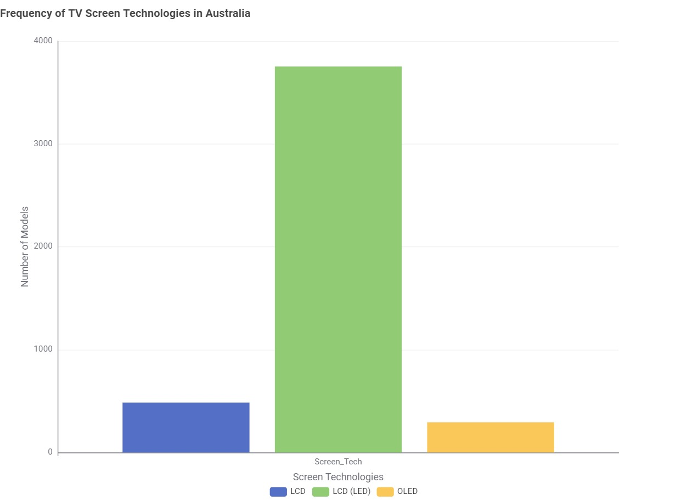
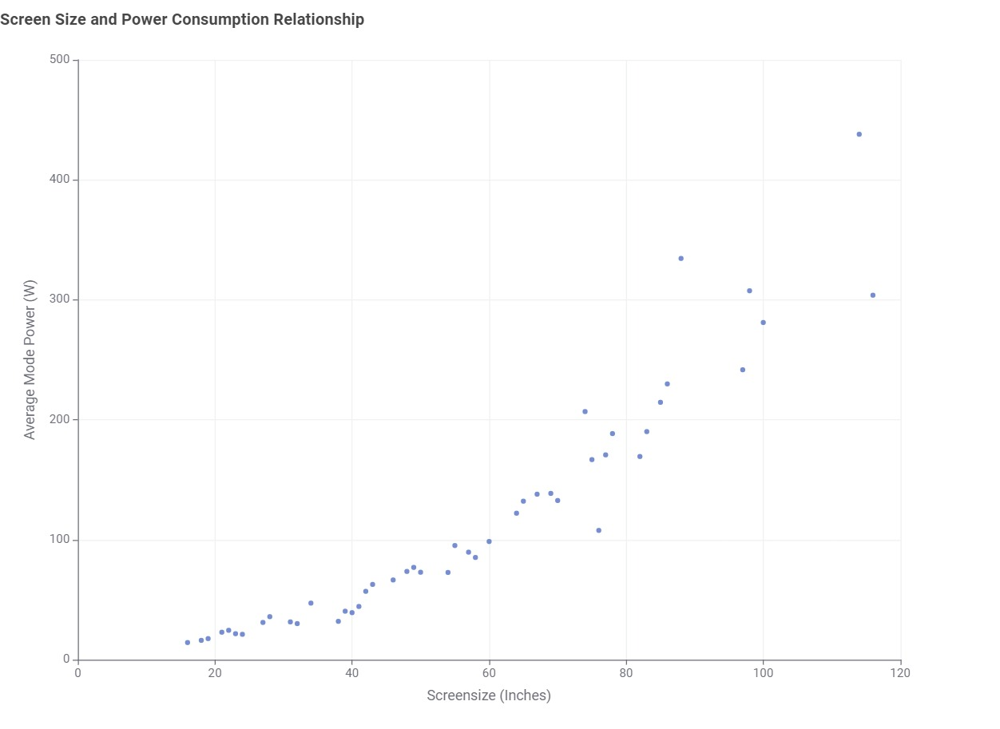
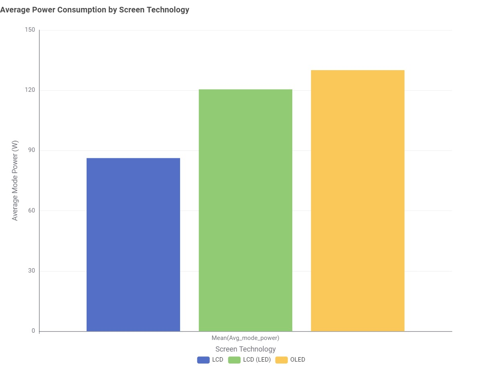
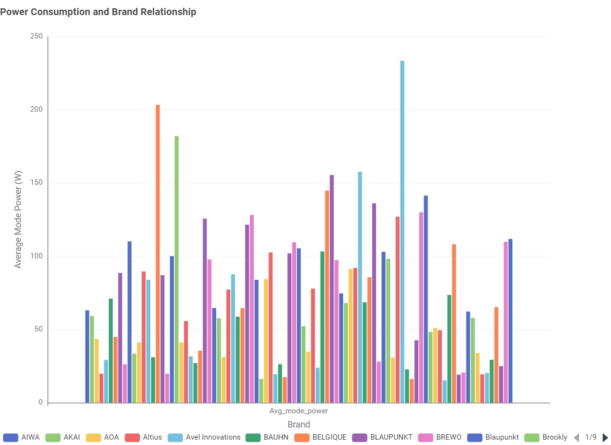

Helping consumers understand the "hidden costs" of their next purchase in TV.

Many Australian shoppers feel overwhelmed by the technical jargon of the market, making it difficult to tell which screen technologies are actually mainstream.
Demonstrate Issue:Without a clear sense of what is standard, consumers often struggle to choose between competing terms like LCD, LCD(LED), and OLED.
Idea for overcoming issue:Cut through the confusion by analyzing the official government registry to see which technology type appears most frequently
Describe the idea:The goal was to pinpoint the most prevalent technology so that buyers know exactly what to expect when browsing the local market.
Show before & after:According to the dataset, it shows LCD, LCD (LED), and OLED are available, but LCD (LED) is the most frequent technology used in modern TVs.
Recommendation:To ensure you have the widest range of models and price points to choose from, we suggest focusing your search on LCD (LED) models.

Buyers often ignore the correlation between screen size and energy costs.
Demonstrate Issue:Compare the power draw of smaller screens directly against larger screen, the disparity in energy requirements becomes clear.
Idea for overcoming issue:Map screen size against energy consumption (W) to visualize exactly how much power those extra inches require.
Describe the idea:The goal is to see how power consumption scales as the screen gets bigger, giving buyers a clearer picture of their potential electricity bills.
Show before & after:According to the dataset it proves a direct upward trend: the larger the screen size, the higher the power use.
Recommendation:Consider the long-term electricity cost before committing to a larger screen size TV.

It is unclear which specific technology is the most efficient choice for home savings.
Demonstrate Issue:Comparing the energy performance of LCD (LED), OLED, and LCD shows a significant range in how much electricity they pull.
Idea for overcoming issue:Analyzed the average power consumption across every major technology category to see how they truly stack up against one another.
Describe the idea:Identify the "Efficiency Champion" among all current screen technologies.
Show before & after:The results confirmed that standard LCD technology remains the most efficient, consuming the least amount of power on average.
Recommendation:If your main goal is minimizing electricity usage, we recommend prioritizing standard LCD models.

Most consumers assume that all manufacturers use roughly the same amount of power for TVs.
Demonstrate Issue:By examining different manufacturers side-by-side, we can see if some brands are more energy-efficient than others.
Idea for overcoming issue:Grouped and compared the power consumption patterns of various major brands to see if the brands makes a difference.
Describe the idea:The goal is to determine if your brand choice alone could have a noticeable impact on your electricity bill.
Show before & after:According to the dataset, different brands do have different power consumption.
Recommendation:Rather than relying on brand loyalty, we suggest checking the specific energy rating for every individual model you consider.